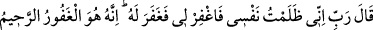
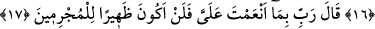
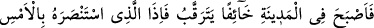
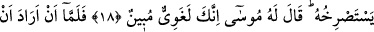
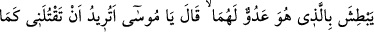
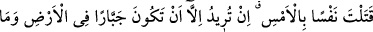
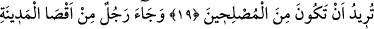
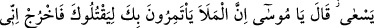
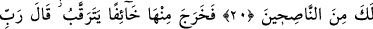
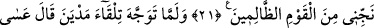
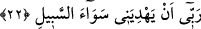
SUÇLULARA ASLA
ARKA ÇIKMAYACAĞIM
16. Mûsâ: Rabbim! Doğrusu kendime zulmettim (başıma iş açtım). Beni bağışla
dedi, Allah da onu bağışladı. Çünkü, çok bağışlayıcı, çok esirgeyici olan ancak
O’dur.
17. Mûsâ: Rabbim! Bana lütfettiğin nimetlere andolsun ki, artık suçlulara (ve
suça itenlere) asla arka çıkmayacağım, dedi.
18. Şehirde korku içinde, (etrafı) gözetleyerek sabahladı. Bir de ne görsün, dün
kendisinden yardım isteyen kimse, feryâd ederek yine ondan imdat istiyor. Mûsâ
ona (yardım isteyene) dedi ki: Doğrusu sen, besbelli bir azgınsın!
19. Mûsâ, ikisinin de düşmanı olan adamı yakalamak isteyince, o adam dedi ki:
Ey Mûsâ! Dün bir cana kıydığın gibi, bana da mı kıymak istiyorsun? Demek, ıslah
edicilerden (düzelticilerden) olmak istemiyor da, bu yerde ille yaman bir zorba
olmayı arzuluyorsun sen!
20. Şehrin öbür ucundan bir adam koşarak geldi: Ey Mûsâ! İleri gelenler seni
öldürmek için hakkında müzakere ediyorlar. Derhal (buradan) çık! İnan ki ben
senin iyiliğini isteyenlerdenim, dedi.
21. Mûsâ korka korka, (etrafı) gözetleyerek oradan çıktı. “Rabbim! Beni
zalimler güruhundan kurtar” dedi.